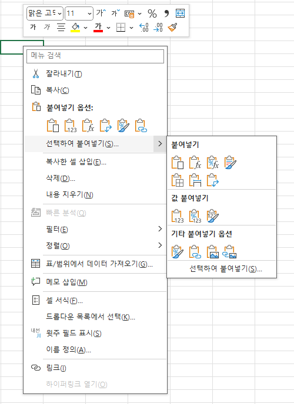
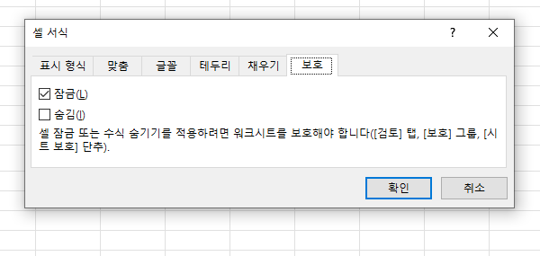
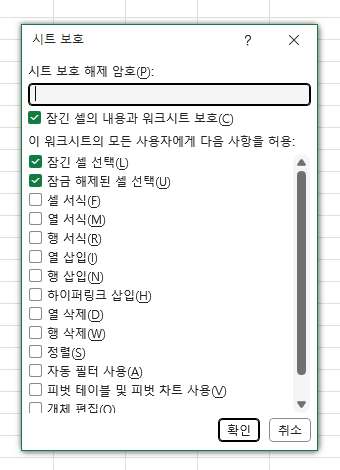
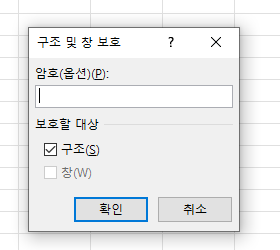
| 실제 값 | #,### | #,##0 |
|---|---|---|
| 1,234 | 1,234 | 1,234 |
| 12 | 12 | 12 |
| 0 | 0 |
#은 표시하지 않고, 0은 0을 표시합니다.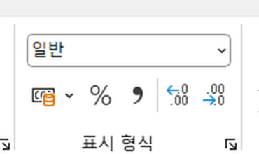
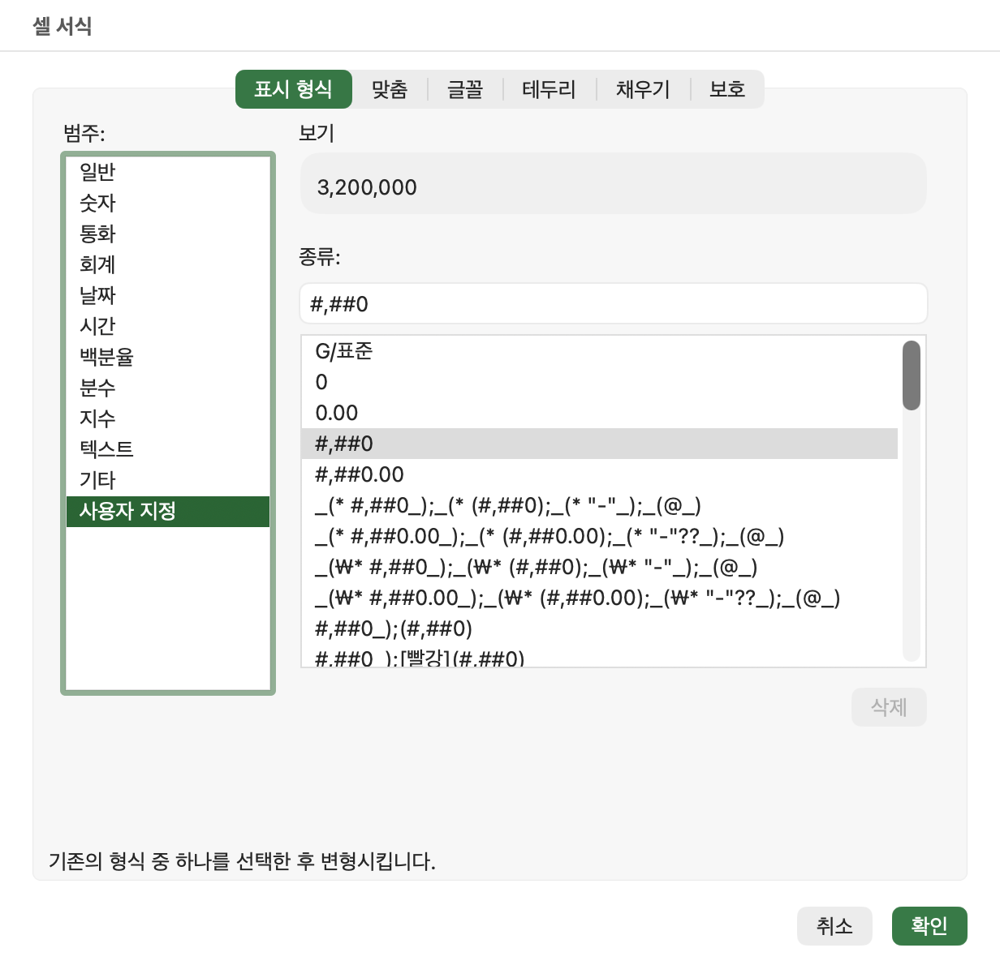
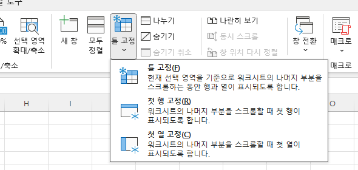
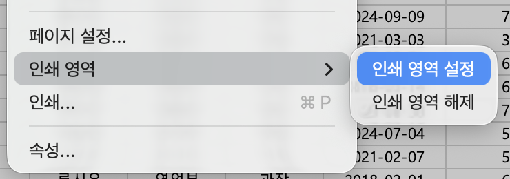
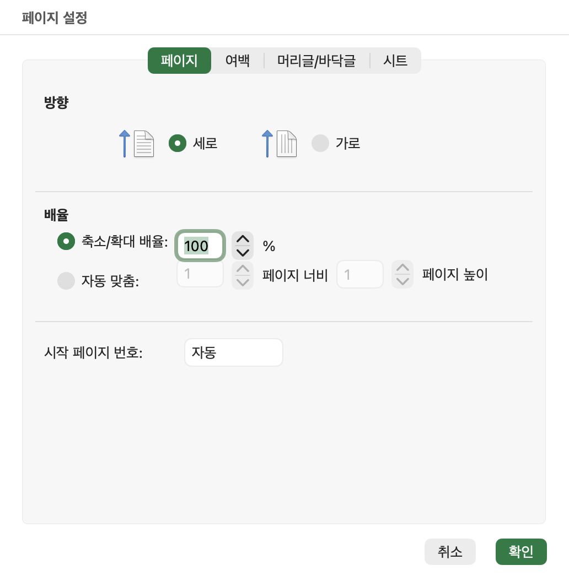
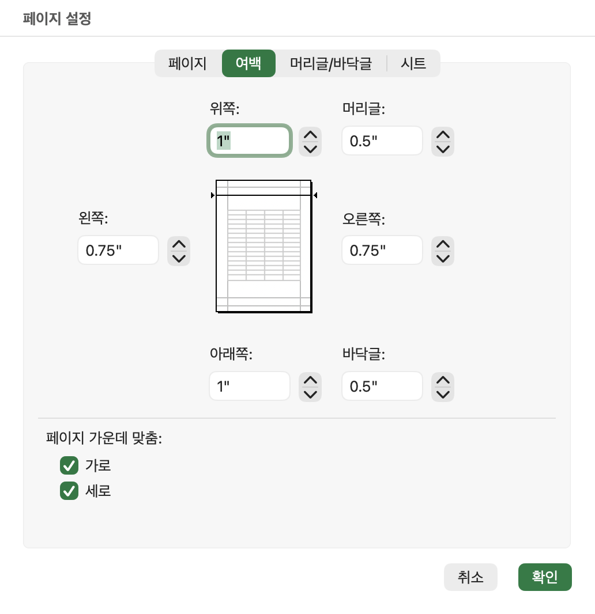
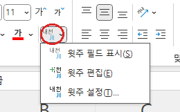
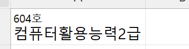
10문제가 한 화면에 나옵니다. 위에서부터 고르고 맨 아래에서 채점하세요.
이름을 입력하면 시작합니다.
채점 결과는 선생님께 전달되어 복습 확인에 쓰입니다.
복사·이동과 값 붙여넣기를 구분할 수 있나요?
시트 그룹을 해제하고, 입력할 셀의 잠금을 해제할 수 있나요?
표시 형식과 틀 고정, 인쇄 영역 설정을 설명할 수 있나요?
우리컴퓨터학원 / ☎ 052)258-3388 · 컴퓨터활용능력2급 · 김태희 강사
화면과 강사 음성을 함께 보거나 원하는 주제를 선택해 들을 수 있습니다.
강사 음성 합성으로 제작한 복습 음성입니다.